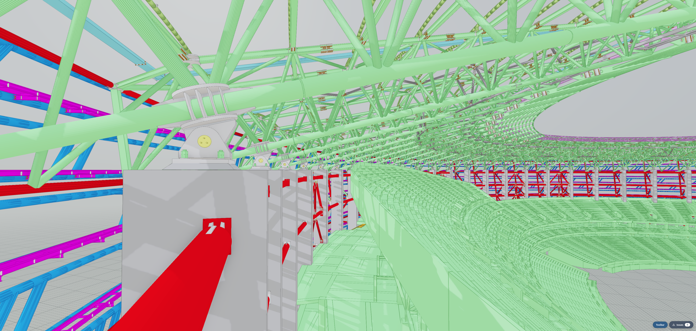

A developer-focused summary of the SDK architecture and the technical choices that matter for AECO applications.
xeokit SDK is a TypeScript SDK for building browser and Node.js AECO tools: BIM viewers, digital twins, coordination systems, model analytics, and operational dashboards.
Two design choices define the SDK:
Around those two foundations, the SDK separates geometry from semantic data, exposes result-monad error handling, and keeps viewing state per View so multiple views can share one scene without duplicating model geometry.

The Baku Stadium XGF streaming example demonstrates viewpoint-driven loading on a large BIM dataset. As reviewers select simulated BCF issues, xeokit streams the XGF chunks visible from each issue viewpoint first, allowing useful review context to appear before the whole model has loaded.
IFC and infrastructure models often use surveyed real-world coordinates. Moving everything near the origin avoids GPU precision loss, but breaks federation, GIS alignment, round-tripping, and control-point workflows.
xeokit keeps model placement meaningful in the scene graph:
scene.createModel({
id: "siteA",
coordinateSystem: {
basis: [1, 0, 0, 0, 0, 1, 0, 1, 0],
origin: [465120.8, 5429331.4, 0],
units: "meters",
scaleToMeters: 1,
},
});
Precision is handled by the renderer:
Result: a model 10 km from world origin renders like the same model centered at origin, while still retaining source-coordinate meaning.
BIM interaction is state-heavy: hide/show, isolate, select, recolor, x-ray, section, and animate thousands of objects. Traditional WebGL designs often turn those operations into buffer updates or draw-call churn.
xeokit batches compatible meshes and stores per-mesh state in fixed-size GPU data textures:
A single draw call can process thousands of meshes. Changing 50,000 object flags becomes a set of texture-row writes plus a render request.
| Bucket | Purpose |
|---|---|
base/ |
Math, compression, core result/event/task types, WebGL helpers, IO, locale, constants. |
model/ |
Scene graph, semantic data graph, procedural geometry/material helpers, streaming. |
viewing/ |
Viewer, View, Camera, SectionPlane, lights, effects, WebGL renderer, controls. |
formats/ |
Import/export for BIM, CAD, point cloud, drawing, reality-capture, and native JSON formats. |
spatial/ |
Picking, snapping, collision/BVH, AABB and region queries. |
inspect/ |
Scene/data validation and issue reporting. |
tools/ |
Interactive measurements. |
simulation/ |
Optional physics hooks. |
interop/ |
BCF viewpoint import/export. |
convert/ |
Conversion pipelines and CLI tooling. |
ui/ |
Plain-DOM UI primitives. |
studio/ |
Optional demo/workbench integration layer. |
The SDK keeps two graphs side by side:
Scene -> SceneModel -> SceneObject -> SceneMesh -> SceneGeometry / SceneMaterialData -> DataModel -> DataObject -> properties and relationshipsObjects are joined by shared IDs. A BIM query can run against the data graph, then apply visibility or selection changes to matching scene objects without the renderer knowing anything about IFC semantics.
Scene owns loaded content. View owns render state: camera, per-object visibility, selection, x-ray, section planes, effects, and canvas. Multiple views can share one scene with no geometry duplication.
Fallible APIs return SDKResult<T>:
type SDKResult<T> =
| { ok: true; value: T }
| { ok: false; type: SDKErrorType; error: string };
Expected failures are values: duplicate IDs, bad parameters, malformed input, and IO errors are handled at call sites instead of being thrown across module boundaries.
import { Scene } from "@xeokit/sdk/model/scene";
import { Data, searchObjects } from "@xeokit/sdk/model/data";
import { Viewer } from "@xeokit/sdk/viewing/viewer";
import { WebGLRenderer } from "@xeokit/sdk/viewing/webGLRenderer";
import { IFCLoader } from "@xeokit/sdk/formats/ifc";
const scene = new Scene();
const data = new Data();
const viewer = new Viewer({ scene });
new WebGLRenderer({ viewer });
const viewResult = viewer.createView({ id: "main", elementId: "canvas" });
if (!viewResult.ok) throw new Error(viewResult.error);
const view = viewResult.value;
const sceneModel = scene.createModel({ id: "duplex" }).value!;
const dataModel = data.createModel({ id: "duplex" }).value!;
const ifcLoader = new IFCLoader();
const bytes = await fetch("model.ifc").then(r => r.arrayBuffer());
await ifcLoader.load({ fileData: bytes, sceneModel, dataModel });
const wallIds: string[] = [];
const q = searchObjects(data, {
startObjectId: "38aOKO8_DDkBd1FHm_lVXz",
includeObjects: ["IfcWall"],
includeRelated: ["IfcRelAggregates"],
resultObjectIds: wallIds,
});
if (q.ok) view.setObjectsSelected(wallIds, true);
The common flow is: create Scene and Data, attach a Viewer and renderer, create one or more Views, load scene/data models, then operate through view state.
searchObjects.Supported formats include:
| Format | Direction | Module |
|---|---|---|
| IFC | Import/export | formats/ifc |
| glTF / GLB | Import/export | formats/gltf |
| XGF | Import/export | formats/xgf |
| XKT | Import/export | formats/xkt |
| dotbim | Import/export | formats/dotbim |
| CityJSON | Import/export | formats/cityjson |
| 3D Tiles | Import/streaming | formats/threedtiles |
| 3DXML | Import/export | formats/threedxml |
| LAS / LAZ | Import | formats/las |
| E57 | Import/export | formats/e57 |
| 3D Gaussian Splatting | Import/export | formats/gaussiansplat |
| OBJ / MTL | Import/export | formats/obj, formats/mtl |
| FBX | Import/export | formats/fbx |
| USDZ | Import/export | formats/usdz |
| FDS | Import/export | formats/fds |
| Import | formats/pdf |
|
| DWG | Import | formats/dwg |
| DXF | Import/export | formats/dxf |
| SVG | Import/export | formats/svg |
| MetaModel | Import | formats/legacy/metamodel |
| Scene/Data JSON | Import/export | formats/scenemodel, formats/datamodel |
Conversion tooling includes IFC -> glTF -> XGF and generic format-to-format conversion through convert/xeoconvert and convert/modelConverter.
studio/ is optional. It provides the demo/workbench shell: toolbar, panel registry, model loading helpers, diagnostics, and runtime UI used by the website examples. Applications can use the SDK core without instantiating Studio.
The SDK also uses:
SDKTaskRunner for staged per-frame workdestroy() / destroyed conventions for long-lived objectsThe core architecture — Scene, Data, Viewer, WebGLRenderer, coordinate handling, data-texture batching, and result-monad conventions — was designed from prior WebGL SDK experience.
AI assistance was used later to accelerate implementation of additional loaders, exporters, and renderer features against that architecture, with xeokit V2 as a reference. Contributions were reviewed, tested, inspected, and revised before being kept.
README.md for module buckets and import paths.packages/website/examples/ for focused examples by prefix: viewing_*, formats_*, building_*.https://xeokit.github.io/sdk/docs/api/.